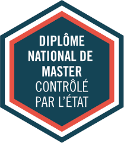

Les Masters Informatiques
Un master est une poursuite d'étude déstinée aux étudiants ayant un niveau bac+3 (licence ou BUT). Cet formation confère à sa sortie, un niveau bac+5 avec un diplôme reconnu par l'Etat.

Il existe différents masters informatiques, chacun donnant une spécialisation dans un des domaines informatiques
Master en cybersécurité
Master en réseaux et télécommunications
Master MIAGE (Méthodes Informatique Appliquées à la Gestion d'Entreprise)
Master ARIAS (Applications Réparties, Intelligence Artificielle et Sécurité)
A la fin d'un master, un étudiant peut décider de continuer sa spécialisation en réalisant un doctorat, ou bien il peut s'insérer dans le monde du travail en cherchant un emploi